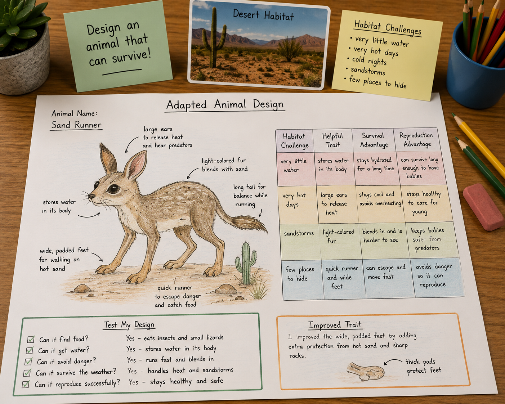
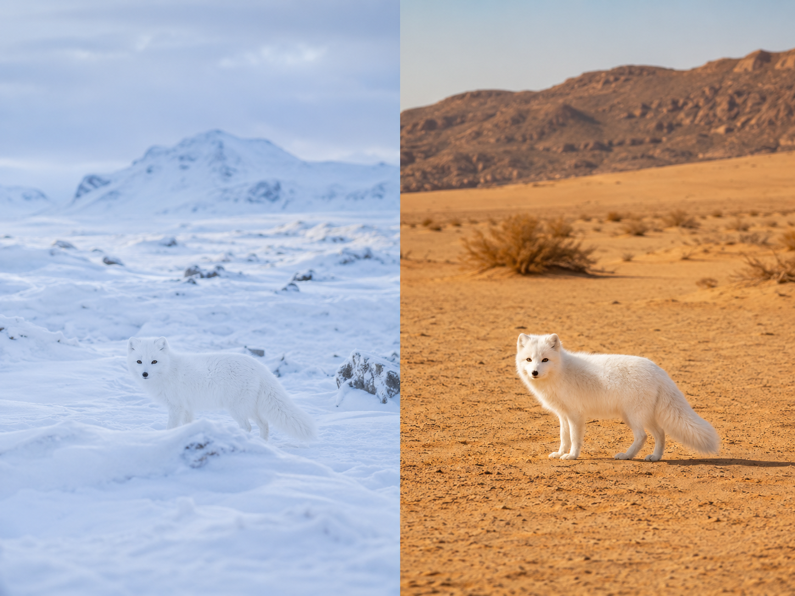
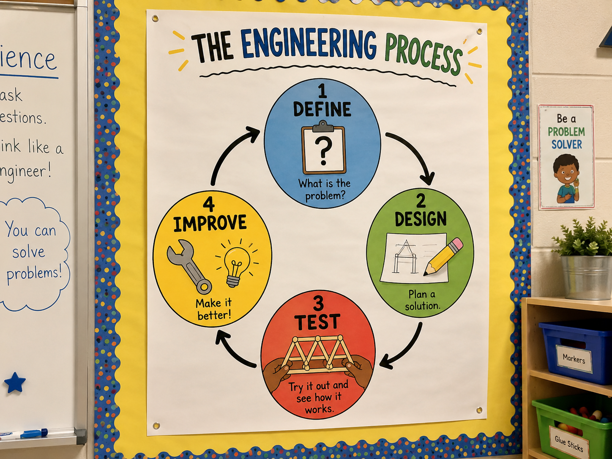
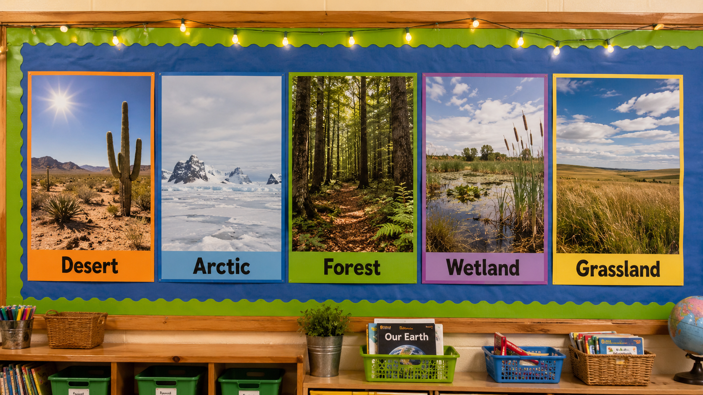

Hold this question as you work today. By the end, you'll have an answer — and evidence to back it up.
Start here. Learn the words you will use today.
Look at the invented animal in the banner above. Every part of its body was chosen for a reason. Study it for one full minute before you read anything else.
No wrong answers here. Good scientists look carefully before they jump to conclusions.
These are the words you'll use today. Tap each card to flip it and read the definition.
Copy this sentence into your science notebook:
"An adaptation is a trait that helps an organism survive and reproduce in its habitat."
Now learn the main science idea.

Not every trait helps equally. A thick white coat is perfect for an Arctic fox. That same coat would overheat an animal in the desert. A trait only counts as an adaptationADAPTATIONA trait that helps an organism survive and reproduce in its specific habitat. when it actually helps in that place.
Helpful traits spread over time. Animals with better-matched traits survive longer. They reproduce more. Their offspring inherit those traits.

Engineers look at a problem, design a solution, test it, and improve it. Today, your problem is: design an animal that can survive in a specific habitat.
Every choice must have a reason. Every trait must solve a real habitat challenge. That's what makes this science — not just drawing.

Staying alive isn't enough. An animal's traits also need to help it find mates and raise offspring. If it survives but never reproduces, that trait disappears with it.
Real-World Connection: A fennec fox has huge ears that release heat in the Sahara Desert. That one trait helps it survive AND stay healthy enough to reproduce every year.
A variation in a trait can become an adaptation when it helps an organism survive and reproduce in its habitat. Over time, helpful traits become more common in a population because more individuals with those traits live long enough to pass them on.
Curious? Go Deeper
Real adaptations don't happen in one animal's lifetime. It takes hundreds — sometimes thousands — of generations. Here's how it works: in every population, individuals vary slightly. One might have slightly wider feet, or slightly lighter fur. If that variation helps it survive a little longer, it reproduces a little more. Its offspring inherit that trait. Over hundreds of years, more and more individuals have the helpful version.
This is called natural selection. Charles Darwin first described it in 1859 after studying animals across many different islands and habitats. He noticed that the same kind of animal could look very different depending on where it lived — and that those differences almost always connected to something in the habitat.
Now test the idea yourself.
You'll need: plain white paper, a pencil, and colored pencils (optional).
Follow each step in order. Record your work in your science notebook.
Choose a habitat. Pick one: desert, arctic, forest, wetland, or grassland. Write it down. Think about what it's actually like there — hot, cold, wet, dry, crowded with predators?

List three habitat challenges. Be specific. "Too little water" is better than "dry." "Temperatures drop below freezing for five months" is better than "cold."
Draw your invented animal. It doesn't need to look like a real species. Give it body parts that seem useful. Draw it large enough to add labels.
Label at least four traits. Use arrows and label each one. Each label should name the trait AND say what it does. Example: "wide feet — keep the animal from sinking in mud."
Complete the challenge chart. In your notebook, make a table with four columns: Habitat Challenge · Helpful Trait · Survival Advantage · Reproduction Advantage. Fill in at least three rows.
Think about these prompts. Talk through your ideas in your mind or with someone nearby.
Tell the story of your design from beginning to end — the habitat, the challenges you found, the traits you chose, and the change you made. Use your notes to help you.
Think through each question on your own. Write your answers in your science notebook.
Check what you understand.
Show what you learned.
🔍 Part A — Label Your Design
Use your labeled drawing from the Explore tab. Make sure it meets all three requirements below.
🚀 Part B — Short Answer
Answer each question in complete sentences. Use your science vocabulary.
Why does a helpful trait need to help an animal reproduce — not just survive?
What do you think?
💡 Start with: "I think a trait needs to help an animal reproduce because…"
What did you observe or learn that supports your thinking?
💡 Start with: "I observed that in my design…"
Why does that make sense?
💡 Start with: "This makes sense because…"
📚 Try to use at least one of these words: adaptation, variation, advantage
Submit your work on Canvas using one of these options:
Make sure your submission includes all of these: